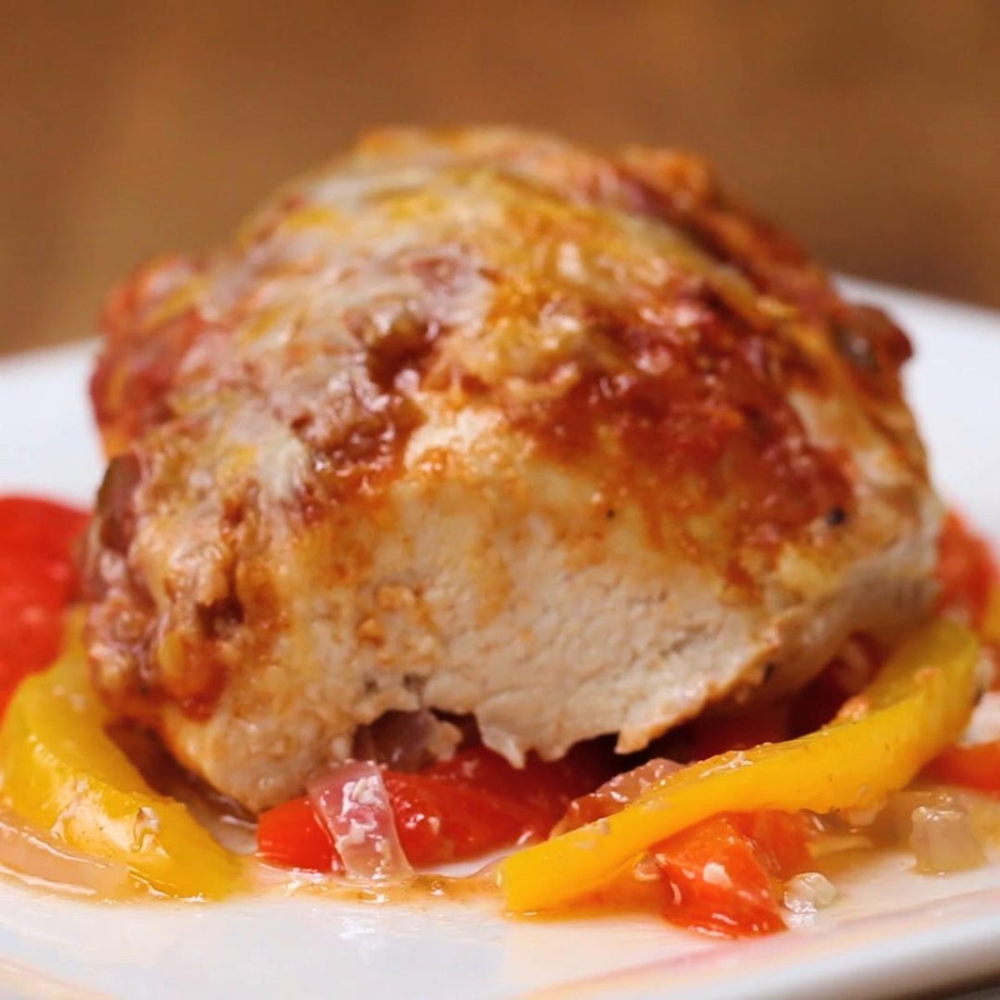

Fajita Parchment-Baked Chicken recipe

Description
Fajita Parchment Baked Chicken is the perfect way to spice up your weeknight dinners. The combination of peppers, onions, and chicken creates a symphony
of flavors that will leave your tastebuds very happy!
Ingredients
- 1 chicken breast
- 1/2 red pepper
- 1/2 yellow pepper
- 1/4 red onion
- 3 tablespoons salsa
- 1 teaspoon taco seasoning
- 1 tablespoon mexican cheese blend
- 1 tablespoon olive oil
- Salt and pepper, to taste
Steps
- Preheat oven to 400°F (200°C).
- Fold the parchment paper in half, then open up.
- Thinly slice the peppers and onion and lay them on one half of the parchment paper.
- Drizzle on oil and sprinkle on salt & pepper.
- Lay the chicken on the peppers. Season with taco seasoning, salt and pepper, and spoon on salsa. Top with cheese
- Fold the parchment paper over the chicken, and cinch the paper together by folding it over itself along the edges.
- Bake for 25-30 minutes or until internal temperature of chicken reaches 165˚F (75˚C).